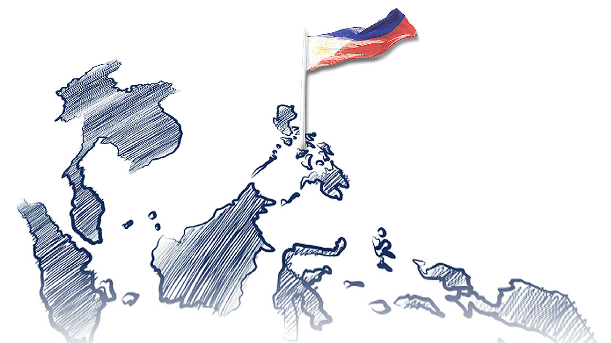
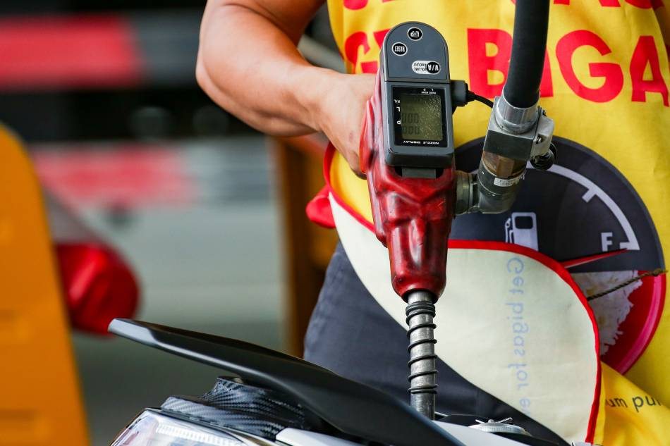

Filipino First Policy

Sanggunian: newmandala.org
Nagsimula sa programang FIlipino Muna ni Pangulong Carlos P. Garcia. Naglalayong bigyan ng higit na malaking partisipasyon ang mga Pilipino sa pagpapatakbo ng ekonomiya.
Oil Deregulation Law (R.A. 8749):

Sanggunian: ABS-CBN
Nagbukas ng kompetisyon sa industriya ng langis. Ang pamilihan ang nagdidikta sa presyo ng petrolyo, at hindi ito maaaring pakialaman ng gobyerno.
Patakaran ng Microfinancing
Sanggunian: LinkedIn
Serbisyong pinansiyal na isinasagawa ng mga bangko na magpautang na mayroong mababang interes sa mahihirap na pamilya.
Patakaran sa Online Business
Sanggunian: Fitz Villafuerte
Online shopping o retailing, Online intermediary service, Online advertisement o classified ads, Online auction.
Retail Nationalization Act of 1964 (R.A. 1180)
Sampung taong palugit sa mga dayuhang capitalist. Pilipino na may korporasyon o asosasyon lamang ang nasa kalakalang pagtitingi.
Retail Trade Liberalization Act of 2000 (R.A. 8762)
Nagpawalang-bisa sa RA 1180. Binuksan ang kalakalang pagtitingi sa mga dayuhan.
Build-Operate-Transfer (BOT) (R.A. 6957)

Sanggunian: BusinessWorld Online
Binibigyan ng karapatang bumuo ng mga pasilidad sa kanilang mga sariling pondo at palakarin ito sa humigit-kumulang na 25 taon.
Asset Privatization Trust (APT)
Itinatag upang mapangasiwaan ang pagbebenta ng mga korporasyong pagmamay-ari ng pamahalaan sa pribadong pagmamay-ari. Pinasimula ni Corazon Aquino.